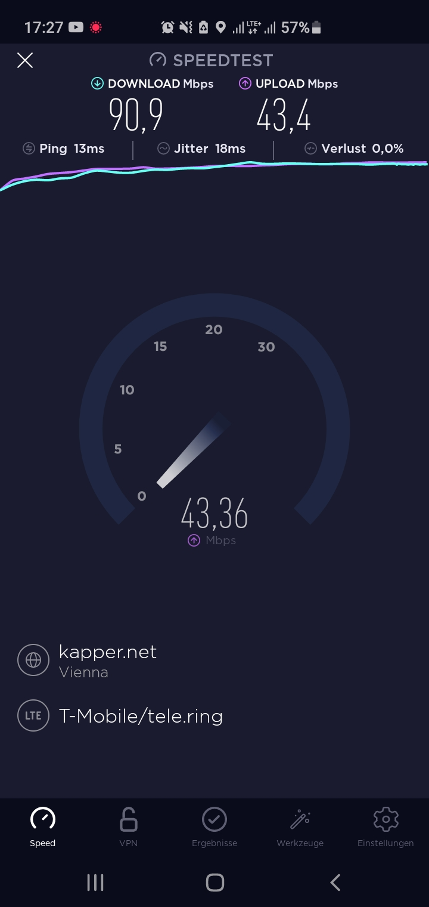
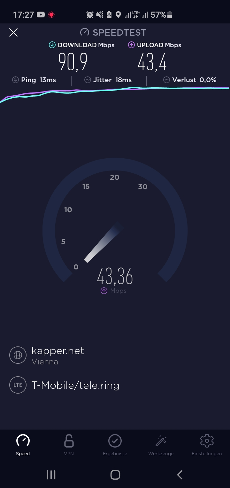
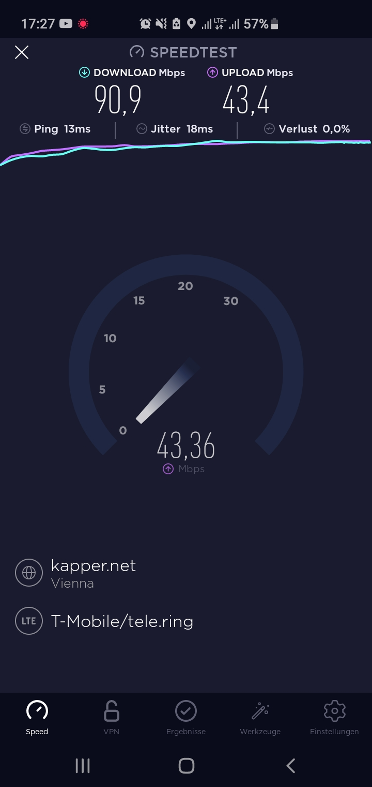
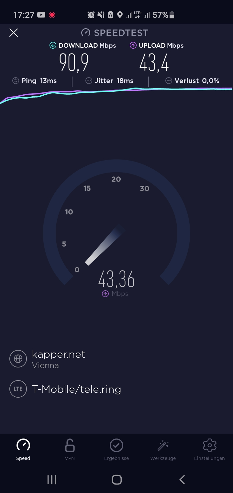

{kind=link}
{kind=link}
Vielen Dank für deine Tille Hilfe, ich werde mir wohl einen neuen Router anschaffen
 

Hallo liebe Comunity,
ich bin schon seit ca 5Jahren T-mobile (Magenta) Kunde und war bis jetzt immer zufrieden aber in letzter Zeit bin das nicht mehr... Ich Wohne in Linz in der Innenstadt und bin von Sendemasten so gut wie umzingelt was man ja anhand verschiedener Karten im Netz auch einsehen kann. Ich habe meinen T-Mobile-Router (Huawai CPE B593) daher auch genau ans Fenster gestellt und in Richtung Sendemast ausgerichtet. Zu diesem besteht auch tatsächlich sichtkontakt. Wenn ich meinen PC nun mit dem Netzkabel verbinde bekomme ich nicht mal 10% der im Vertrag angegebenen maximalen Geschwindigkeit was mich schon etwas sauer macht da ich einen sehr teuren Vertrag gewählt habe da ich gerne auf dem PC spiele und ich dafür stabiles Internet mit angemessener Geschwindigkeit nutzen will. Mein aktueller tarif ist der Mobile Gold der mit bis zu 150 Mbps für 55€ pro Monat bieten soll. Ich erreiche an guten Tagen 15, an schlechten tagen nicht mal 6-7 Mbps was eigentlich für den heutigen Internetstandart eine Desaster ist. Der Kundensupport kann mir in diesem Fall leider auch nicht helfen und ich werde mehr oder weniger mit den Worten "ist halt nun mal so, das netz ist ev an Ihrem Standort überlastet" abgewimmelt. Kündigungsgrund ist das leider keiner. Aber ich frage mich wieso ich für ein überlastetes Netz in dem ich nur ca 10% der Leistung erhalte so viel Geld ausgeben muss. Der Vertrag ist noch über ein Jahr gebunden. Ich meine 55€ ist schon viel Geld.
Ich würde mich sehr freuen eventuell hier eine Lösung für das angesprochene Problem zu finden. Ich wäre auch bereit meinen Tarif zu ändern zu einem der mehr Leistung bietet, nur vermute ich das das mein Problem nicht verbessern wird. Es gäbe einen Vertrag der mich 5€ mehr kosten würde und ich 100 Mbps mehr haben könnte. Ob das was bringen würde ?
Funfact: mein Upload ist fast 8 mal höher als meine Download Geschwindigkeit
Mit freundlichen Grüßen
Michael
Hallo @michii
Besteht die Möglichkeit auf einen stabilen Kabel/DSL Zugang? Der B593 von Huawei ist ein CAT 4 Gerät also schon eines der älteren Generation dieser keine Frequenzen bündelt. Neuere Router können das bereits. Wenn der Upload höher ist als der Download ist meistens das LTE Frequenzband überlastet.
Verfügbarkeit Magenta Kabelinternet
Bearbeitet von Rexalius2000
Neben Dem LTE steht kein + nein
Ja ich besitze einen Kabelanschluss
vor 1 Minute schrieb michii:Ja ich besitze einen Kabelanschluss
Was ist der Grund warum du nicht auf diesen wechselst, wenn solche Performance Probleme mit einem Internet über Mobilfunk bestehen?
weil ich kein weiteres Geld ausgeben mag wenn ich einen 55€ vertrag mit Bindung besitze der mir das selbe verspricht...
Versuche mal schriftlich das Problem an Magenta einzubringen, vielleicht können sie ja auf Kulanz, wenn du einen Kabelanschluss abschließt was machen. Du kannst natürlich auch versuchen auf einen aktuelleren Router der Frequenzen bündelt (Carrier Aggregation) kann zu wechseln. Besitzt du ein Smartphone der neueren Generation?
ja ich beitze ein galaxy s10 plus 5g fähig wofür der vertrag auch ausgelegt ist ...
ja ich denke ich werde das mal probieren, weißt du an welche Emailadresse ich mich da genau wenden muss ?
Lg und vielen Dank für diene Hilfe
Lege mal bitte die SIM Karte in das S10 Plus ein, wenn die Geschwindigkeit mit 4G oder wenn bereits verfügbar 5G höher ist dann liegt es an deinem Router. Dein Tarif befindet sich von der Breitbandoptimierung auch ganz vorne und wird gegenüber reinen LTE Datenverträgen sogar bevorzugt. Nur dein Router ist leider schon ziemlich alt. AFAIK kam der 2014 auf dem Markt.
Eine Mail Adresse gibt es leider nicht, allerdings kannst du dein Anliegen über das Magenta Kontaktformular einbringen.
Vielen Dank für deine Tille Hilfe, ich werde mir wohl einen neuen Router anschaffen
 

Ja schaut jetzt ganz gut aus dein Speed Test
 Interessant wäre jetzt noch was für LTE Bänder du empfängst, somit könnte man die Suche nach einem neuen Router besser eingrenzen, gib dazu bitte
*#0011#
am Samsung ein und wähle die passende SIM Karte aus.
Interessant wäre jetzt noch was für LTE Bänder du empfängst, somit könnte man die Suche nach einem neuen Router besser eingrenzen, gib dazu bitte
*#0011#
am Samsung ein und wähle die passende SIM Karte aus.
Danke! Du empfängst derzeit insgesamt 3 Frequenzbänder (Band 3,Band 1und Band 7) . Folgende Router würde ich dir empfehlen:
Alle diese Router können mehr als 3 Frequenzbänder bündeln. Bitte beachte aber das es sich bei Internet über Mobilfunk um ein geteiltes Medium handelt und die Geschwindigkeit je nach Auslastung der Mobilfunkzelle variieren kann. Nur bei einem Kabelgebunden Internet (DSL/Kabel) gibt es eine fix vor eingestellte Bandbreite, die nur sehr leicht bis gar nicht abweicht. Beobachte bitte weiterhin mit deinem Smartphone die Geschwindigkeit, du kannst die Messung auch im Hintergrund über die RTR Netztest App im Wiederholungsmodus laufen lassen. Sollte die Geschwindigkeit zu stark einbrechen (meistens ab 20 Uhr) rate ich dir zu einem Kabelzugang.
Bearbeitet von Rexalius2000
Unbedingt einen neuen Router zulegen, am besten den ZTE MF289D. Der holt das meiste aus dem Netz raus.
{kind=link}
{kind=link}
{kind=link}